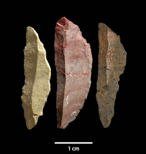

2015-07-23 15:50:00
最近这一期的《Scientific American》（August 2015，Volume 313，Number 2）有一篇很好的文章，叫做《The Most Invasive Species of All》（《最具侵略性的物种》）；当然这个最具侵略性的物种就是Homo Sapiens（智人）。我对演化的歷史，尤其是人类演化的歷史，一直很有兴趣；而考古学界原本对智人崛起的过程语焉不详。这篇文章所论证的学说却是我所见过最具说服力的，所以在可见的未来，很可能会慢慢成为学术界的共识；在此与读者们分享这个新理论。
在过去20年里，学术界基于新的化石发现和基因分析，基本上已经确定智人最早是20万年前在南非演化出来的；其间可能受冰河期气候变化影响，人口涨跌很大，最惨的时候少到不足一千人。但是到了7万年前左右，忽然一飞冲天，很快地扩散到东非和西非，5万5千年前离开非洲进入阿拉伯半岛，然后分东北西三路分别进入东南亚、中亚和欧洲。此后有如蝗虫过境，不但把旧有的原始人种如Homo Erectus和Homo Neanderthal杀戮尽净，所有大型的哺乳动物也有一半左右被猎杀到绝种。4万5千年前Homo Sapiens进入澳洲，1万4千年前进入美洲，这些都是原始人种从未驻足的地方，结果大型哺乳动物的絶种率更高，达到3/4以上（应该是因为这些物种没有被任何人种猎杀的演化歷史，所以适应更为不良）。
以上这段已经被考古学界确认的歷史，会为有好奇心的读者带来几个问题，其中最奇怪也最重要的是为什么我们的共同先祖在一开始的13万年里混得如此不济？而在7万年前，他们吃了什么药，能从屌丝一跃而成为世界霸主？这篇文章的作者就对此提供了一个完整和合理的答案。他是美国Arizona State University的教授Curtis Marean，也是南非Pinnacle Point发掘计划的主持人。Pinnacle Point是在公元2000年发现的一个海边洞穴，里面有智人自17万年前至4万年前连续居住而留下来的化石和遗迹。后来它成为研究早期智人歷史最重要的考古资料来源，所以Marean教授是真正权威中的权威。而且我很喜欢他的写作风格：一般为《Scientific American》写稿的专家学者总有点畏首畏尾，明明有八九分证据有时却只肯说二三分话。这是因为新发现要成为学术界的共识，通常有一个多年的过程，在这个过程中会有为出版而出版的论文提出Implausible But Not Impossible（可能性很小但不是絶对的零）的不同理论，所以必须慢慢地一个一个消除。在消除之前，正式的学术讨论必须把所有的理论客气地平等对待。一般作者也就习惯性地以学术论文的标准来《Scientific American》讨论新发现，Marean教授却不在乎客气，一切只以证据与逻辑为准；要是有九成的把握，他就照说九成。例如原始人种和大型哺乳动物的絶种很明显地应该是智人直接造成的，他就如此直说；别人却会扭扭捏捏地列举三四种其他可能性很小的解释。
Marean的理论是这样的：智人刚演化出来的时候，虽然有一张比较英俊的脸和一个比较聪明的大脑，在和原始人种竞争的过程中却没有什么优势。这是因为当时两边最先进的高科技武器都是长矛，我们的人高手长，原始人种却是比较强壮有力的，最后还是势均力敌。在人文因素上，二者也没有代差，都可以用简单的语言进行通讯，都有拟定并执行作战计划的能力，也都是以20-25人的家族为单位的游猎社会。其结果就是智人被局限在南非的一角，当冰河期进入高峰的时候，非洲南端的纬度最高，所受到影响也最大，结果猎物大幅减少，人口也就随之大幅下降。但是天将降大任于斯人也，必先苦其心志，劳其筋骨，饿其体肤。在饿死了很多人之后，残存者开始依靠海边的贝类果腹（这应该也是智人开始进驻Pinnacle Point的原因），而贝类和陆上的猎物不同，它只出现在一个定点，所以能占领并保卫自己地盘的人会有很大的演化优势，结果我们的祖先为了争夺產贝的海岸线而必须进行经常性的战争，在大约10万年的过程里逐步演化出一个人文优势，也就是大规模合作和组织的能力。详细来说，原始人种偶尔必须作战的时候，只能动员自己家族的成员；智人却发现人多很重要，最后演化出能接受陌生人命令的新大脑迴路，从此得以动员由20-25个家族组成的部族（Tribe），那么没有这个突变的家族自然就被“淘汰”了。
但是只有动员组织能力还不足以让智人称霸世界，这是因为战争胜利往往有血的代价，一旦智人离开了海岸线，游猎生活的地盘很大很不明确，就没有足够的诱因来冒险发动战争。要给智人一个征服世界的动机，必须要先给他一个压倒性的优势，也就是武器科技上的代差。而地球上最早的箭头，就是在 Pinnicle Point发现的。读者想猜猜它们的年纪吗？刚好就是7万1千年前出现的。有了弓箭手，那么只有长矛兵的原始人种自然完全不是对手，征服作战成了一面倒的屠杀，智人此后的迅速扩张和高效率的杀戮也就有了很合理的解释。
在Pinnicle Point出土的世界最早的箭头，学术上属于Microliths（微石器）。
我必须提醒读者，以上的论述虽然合情合理，但是只有弓箭的贡献是可以从时间上的符合而大致确定，大规模合作组织能力是否真的在那10万年间被演化出来，要等到后续的研究找到那个使人类能接受陌生人命令的基因之后才算稳妥。不过我个人很喜欢这个理论：一方面我一直鼓吹即使在现代的国际竞争中，最重要的胜负因素也是大规模的组织能力，所以如果我们的共同祖先最早的演化就强调这因素，那是很有意思的；另一方面，一个新的武器直接导致原始人种的灭绝，更是对“忘战必亡”原则的一个极强的见证。当前的台湾社会应该好好的反思，下放公权力给愚民的结果是刁民以互相斗争为乐，整个国家丧失了大规模的组织能力；如果合作组织能力原本就是智人这个物种的定义性功能，那么台湾人是不是也像原始人种一样即将面临灭絶的命运？在忘战必亡方面，如果台湾人不愿文统，为什么还没有全民皆兵、积极备战？当侵略者来抢地盘时，原始人种虽然打不过，想来应该还是人人拿起武器来试图抵抗的，那么那些只会挑衅中共却不愿当兵保卫国家的民粹人士是不是连他们都不如呢？如果比那些原始人种还原始，那么他们就不能再算是Homo了，而是已经退化到Australopithecus（早于200万年前的猿人）的地步；不过或许这个分类才是命符其实的，因为Australopithecus（Australo-是拉丁文/Pithecos是希臘文）的本义是“南方的猴子”。